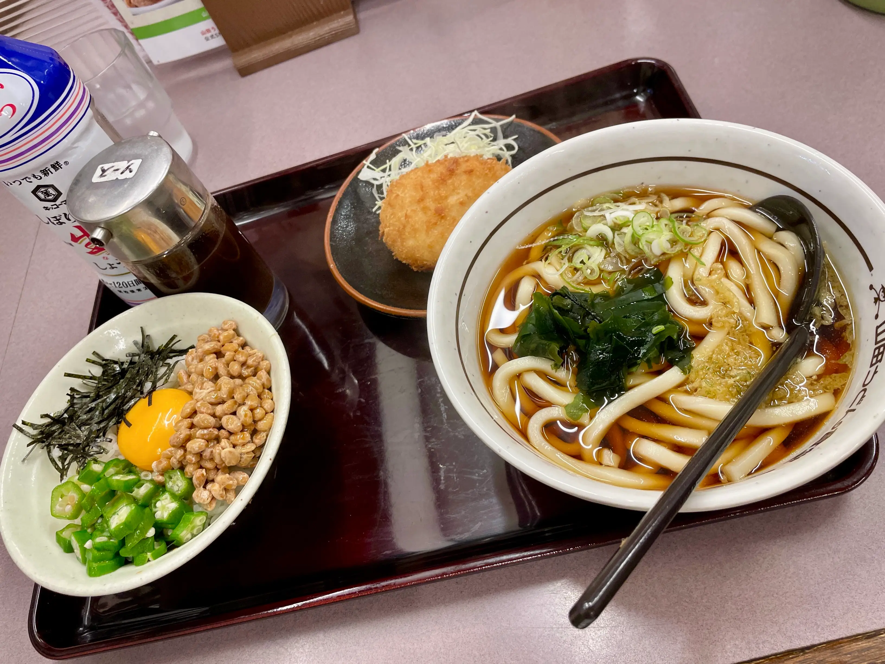
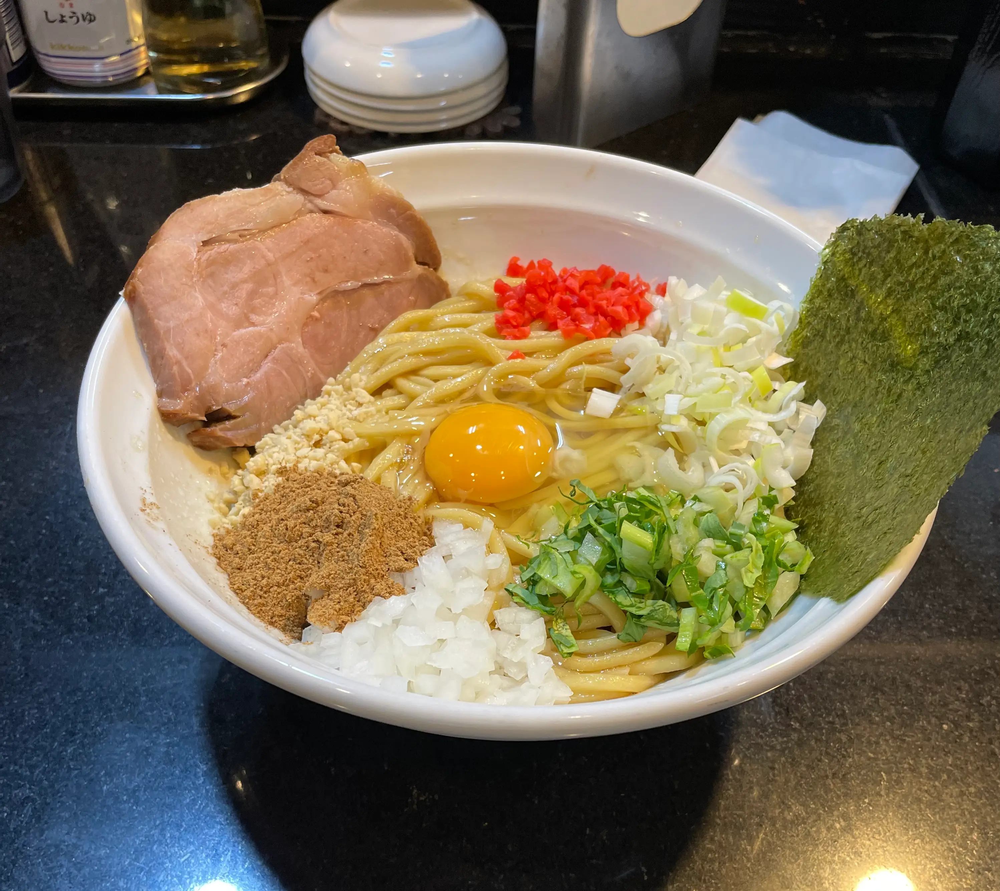
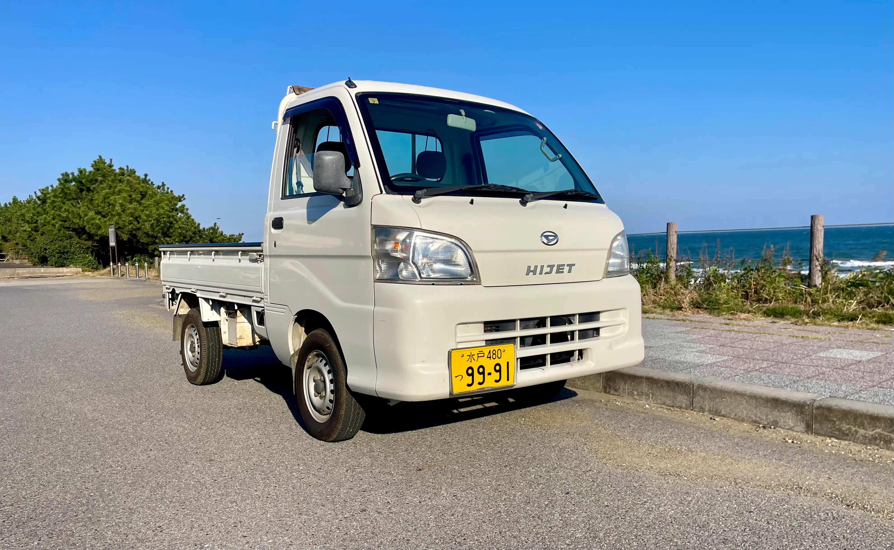
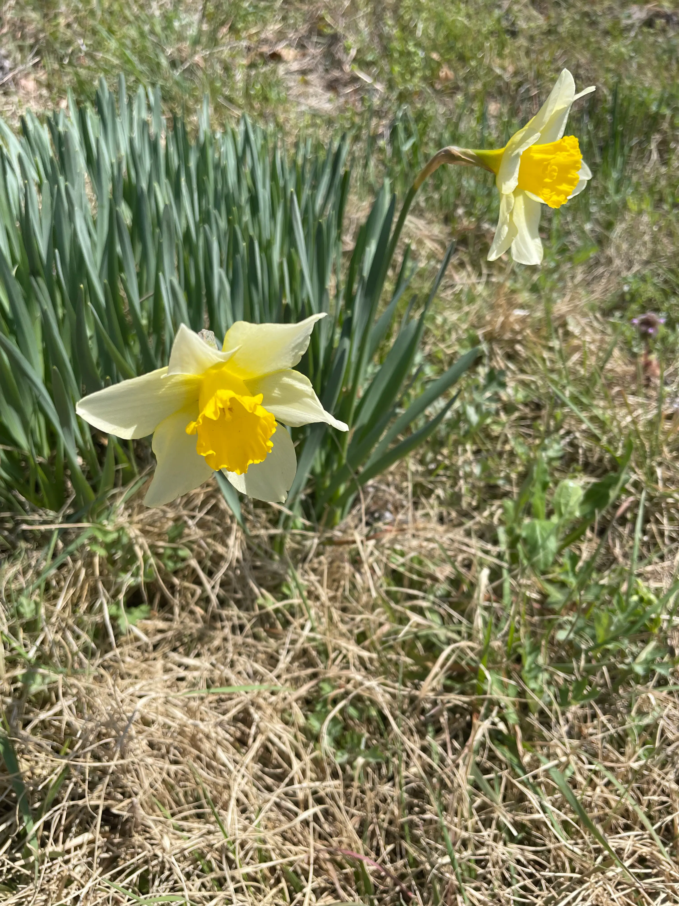
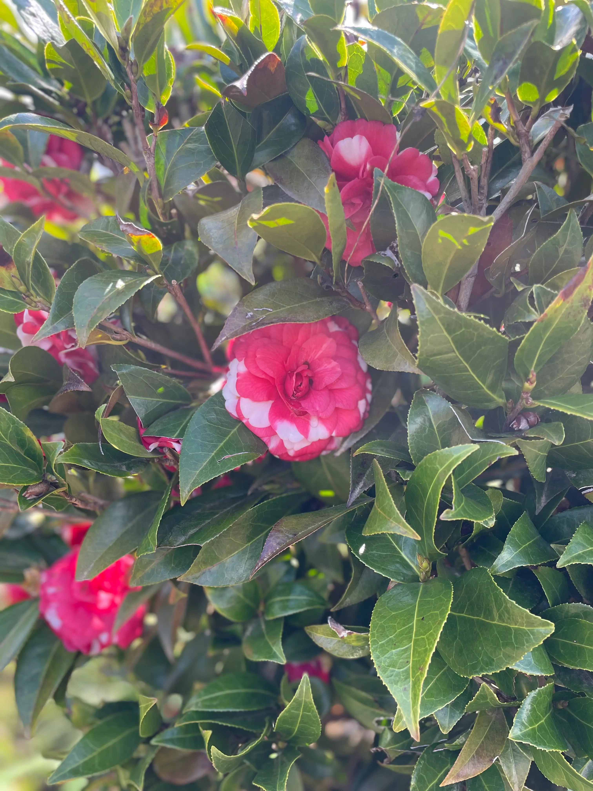
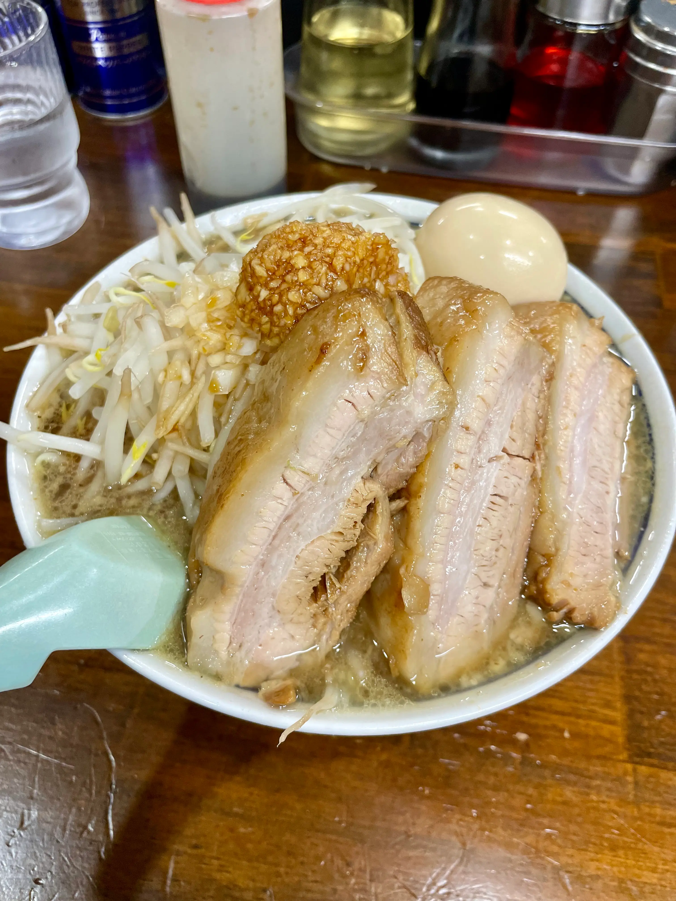
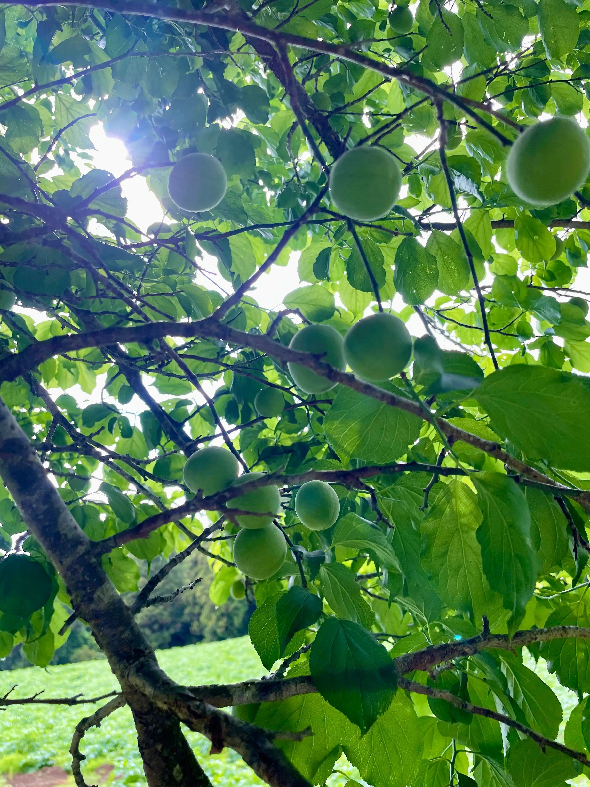

思いついたら動く、それがオレ流
When inspiration strikes I move That's my way
About ー 私について ー

独学でWeb制作の学習をし、これまでに友人のカフェサイトと地元の建設会社サイトを担当しました。
丁寧な実装を心がけ、クライアントが扱いやすいサイト作りを意識しています。
スキル
- 開発：HTML / CSS / JavaScript / jQuery / WordPress / GitHub
- デザイン・編集：Figma / Canva / PhotoScape X
- 動画編集：iMovie / DaVinci Resolve
制作実績
- 友人のカフェサイト（デザイン実装・公開）
- 地元の建設会社サイト（WordPress テーマ実装・コンテンツ組み込み）
パーソナル
- 趣味:ゴルフ ベストスコア 82
- 好きな作業：汚れた物を綺麗にする・壊れた物の再生・草刈りで整える作業
- 好物：肉じゃが、中華クラゲ
- 日常：庭に生えてる赤しそを煮込んでジュースにして飲むことがマイブーム
- 投資：株、投資信託、暗号通貨、不動産投資
lifestyle ールーティンー






